Game Client
Developer
게임 플레이 경험을 만드는
게임 클라이언트 개발자입니다.
웹
개발 실무 경험을 바탕으로 유지보수성 과
확장성을 고려한 게임 시스템을 설계합니다.
유지보수성과 확장성을 고려한 구조를 만드는 것을 중요하게
생각합니다.
데이터 중심 설계와 명확한 책임 분리를 바탕으로,
변화에 유연한 게임 시스템을 만드는 것을 지향합니다.
Featured
Experience
- 상점·인벤토리·장비·스탯·강화 및 전투 UI 등 Gameplay 시스템 전반 개발
- 마법진 드로잉·판정 시스템 구축과 리스트 렌더링·미니맵 최적화 주도
- GameCore 기반 전역 아키텍처와 ScriptableObject 기반 RPG 시스템 설계
- 전투, 스킬, 로드아웃, 성장 시스템 및 UI 구현
- Light2D 기반 탐색·정화 시스템 및 핵심 게임플레이 구현
- Object Pooling 기반 몬스터 스폰 최적화와 게임 시스템 개발
- Azure OpenAI 기반 Agentic AI 및 MCP 연동 기능 개발
- 문서 검색 정확도 향상과 출처 Viewer 기능 구현
- Vue.js 기반 AI 문서 검색·챗봇 인터페이스 개발
- 문서 검색 속도 개선 및 권한 관리 기능 구현
- React·Docusaurus 기반 제품 홈페이지 개발
- 반응형 UI 및 다국어(i18n) 지원 구현
- Vue3 기반 MLOps 관리 UI 및 데이터 관리 기능 개발
- 로그인·권한 관리와 Cypress 테스트 환경 구축
Game Projects
Contact
"ARDA를 침략하는 인간들로부터 수호하며 성장하는 액션 RPG."
- 실시간 액션 전투와 스킬 조합
- 장비 · 강화 · 크래프트 기반 캐릭터 성장
- 데이터 기반으로 확장 가능한 콘텐츠 구조

전투 → 보상 획득 → 장비 강화 · 크래프트 → 더 강한 콘텐츠 도전으로 이어지는 성장 루프. 플레이어가 매 사이클마다 명확한 성장을 체감하도록 설계했습니다.
왜 이렇게 설계했는가.
Boot에서 초기화 순서를 통제하고, GameCore가 전역
시스템의 진입점을 담당합니다.
시스템 간 의존성을
단방향으로 정리해, 기능 추가 시 영향 범위를 예측 가능하게
만들었습니다.

상점 판매 항목을 ScriptableObject로 데이터화하고, 플레이어 진행도에 따라 구매 가능 여부가 달라지는 구조를 만들기 위함.
- Skill
- Consumable
- Rescue Item
- Recipe
- Skin
- 구매 비용은 ItemRequirement 형태로 설정하며, 단순 골드 구매가 아니라 특정 재료를 소모하는 방식으로 구성
- 무기 강화 단계에 따른 구매 조건 적용
- 몬스터 구조 횟수에 따른 구매 조건 적용
- 판매 아이템을 ScriptableObject로 관리
- 기존 ItemData / SkillDefinition / RecipeData와 연동
- 아이템 타입에 따라 표시 정보 자동 분기
- 재료 기반 구매 비용 설정
- 플레이어 성장도에 따른 구매 조건 적용
판매 항목은 스킬·소비 아이템·구조 아이템·제작법· 스킨으로 구분되며, 각 카테고리에 맞는 데이터를 연결해서 사용할 수 있음. 이를 통해 플레이어의 진행도에 따라 상점 구성이 자연스럽게 확장되는 구조를 만듦.


SkillDefinition ScriptableObject에 스킬 구성 요소를 데이터로 정의하고, Effect 단위로 기능을 조립해 다양한 스킬을 만들 수 있도록 구현.
- ScriptableObject 기반 스킬 데이터 관리
- Start / Apply 타이밍 분리
- Effect 조합 방식으로 스킬 기능 확장
- Projectile, VFX, SFX를 스킬별로 데이터화
- TargetType, AimMode, WeaponType을 통한 다양한 스킬 구성 가능
public List<SkillEffectEntry> startEffects = new();
public List<SkillEffectEntry> applyEffects = new();
public List<SkillPrefabEntry> prefabs = new();
public SkillSfxEntry startSfx;
public SkillSfxEntry applySfx;
public void ExecuteStart(SkillContext context)
{
context.Sfx = startSfx;
ExecuteEffects(startEffects, context);
}
public void ExecuteApply(SkillContext context)
{
context.Sfx = applySfx;
ExecuteEffects(applyEffects, context);
}GameObject projectilePrefab = context.Skill.GetPrefab(SkillPrefabType.Projectile);
ProjectileContext projectileContext = CreateProjectileContext(context, multipliers);
Projectile projectile = ProjectilePool.Instance.Get(
projectilePrefab,
spawnPosition,
Quaternion.LookRotation(direction)
);
projectile.Initialize(projectileContext);
GameCore.SoundManager?.PlaySkill(context.Sfx.clip, context.Sfx.volume, context.Sfx.pitch);각 스킬은 기본 정보·조준 방식·타겟 타입·사용 무기 타입·프리팹·사운드·Effect 목록을 데이터로 가지며, 실행 시점을 Start/Apply로 분리해 타이밍별로 필요한 Effect만 실행. 새로운 스킬을 만들 때 코드를 새로 작성하기보다 기존 Effect를 조합하거나 필요한 Effect만 추가해서 확장할 수 있어, 신규 스킬 추가 비용과 밸런싱 반복 속도가 크게 향상됨.


플레이어가 탐험을 통해 획득한 재료로 다양한 아이템을 제작하는 성장 시스템. 기본적인 제작 기능뿐 아니라, 몬스터 구조 시스템과 연계해 제작 성공 확률에 영향을 주도록 설계한 것이 특징.
제작은 모두 RecipeData를 기준으로 이루어지며, 하나의 레시피에는 결과 아이템·필요한 재료·기본 성공 확률이 저장되어 있음. 플레이어가 제작을 시도하면 먼저 레시피 정보를 참조해 제작 가능 여부를 판단.
제작을 시작하면 먼저 필요한 재료를 모두 가지고 있는지 확인하고, 부족하면 제작을 진행하지 않음. 충분하다면 필요한 재료를 먼저 차감한 뒤 제작을 진행하도록 구현했는데, 이는 여러 개를 동시에 제작하는 경우에도 재료 계산이 일관되게 이루어지도록 하기 위함.
재료를 소모한 이후 레시피에 저장된 기본 성공 확률을 기준으로 실패 / 성공 / 대성공 세 가지 결과 중 하나로 판정. 성공하면 결과 아이템을 1개, 대성공하면 2개 획득.
제작 시스템의 가장 큰 특징은 구조한 몬스터를 추가 재료처럼 사용할 수 있다는 점. 플레이어는 제작을 시작하기 전 구조한 몬스터의 등급을 선택할 수 있고, 선택한 몬스터는 제작 시 소모되며 등급에 따라 제작 성공 확률과 대성공 확률이 각각 증가함. 희귀한 몬스터를 사용할수록 성공 가능성은 높아지지만 몬스터를 소비해야 하므로, 플레이어는 지금 사용할지 이후를 위해 보존할지 선택해야 하는 트레이드오프가 생김.
몬스터 등급에 따른 성공 확률 증가량과 대성공 확률은 별도의 데이터에서 관리. 예를 들어 Common · Rare · Epic과 같이 등급마다 성공 확률 증가량과 대성공 확률을 각각 독립적으로 설정할 수 있어, 코드 수정 없이 데이터만으로 밸런스를 조정할 수 있도록 설계.
제작이 끝나면 각 제작 결과를 모두 저장한 뒤, 성공 횟수·대성공 횟수·실패 횟수·획득한 아이템 수를 집계해 UI에 표시. 여러 개를 한 번에 제작하더라도 결과를 한눈에 확인할 수 있음.
구조 시스템과 제작 시스템을 자연스럽게 연결한 점이 핵심 설계 포인트. 보통 RPG에서는 몬스터를 구조해도 단순히 컬렉션만 채워지는 경우가 많지만, ARDA에서는 구조한 몬스터를 제작에 활용할 수 있도록 만들어 구조 콘텐츠가 성장 시스템에도 직접 영향을 주도록 설계함. 또한 성공 확률·대성공 확률·레시피 정보를 모두 데이터로 관리해, 코드 수정 없이 콘텐츠를 확장하거나 밸런스를 조정할 수 있는 구조를 만듦.
몬스터 구조에 성공하면 보상 아이템을 인벤토리에 지급하도록 구현되어 있었는데, 이 과정에서 Collection Modified Exception이 발생해 빌드 환경에서 게임이 크래시되는 문제가 있었음.

PlayerInventory.AddItem()이 호출되면 인벤토리 변경을 알리기 위해 OnInventoryChanged 이벤트가 발생하도록 구성되어 있었음. 문제는 이 이벤트를 수신한 RescueQuickSlotUI가 퀵슬롯 목록을 갱신하기 위해 인벤토리 데이터를 다시 순회하고 있었다는 점으로, 이 시점은 아직 AddItem()이 완료되지 않은 상태였기 때문에 컬렉션이 수정되는 도중에 같은 컬렉션을 다시 순회하는 상황이 발생함. 분석 결과 컬렉션 자체의 문제가 아니라, 이벤트 호출 과정에서 동일한 데이터에 다시 접근하는 재진입(Reentrance) 문제였음을 확인.
기존에 원본 컬렉션을 직접 순회하던 방식을 변경하여, ToList()로 컬렉션의 복사본을 생성한 뒤 순회하도록 수정. 이후 원본 컬렉션이 변경되더라도 순회 중인 복사본에는 영향을 주지 않도록 처리.
빌드 환경에서 발생하던 크래시를 정상적으로 해결. 이벤트 기반 시스템에서는 컬렉션 순회 시점과 데이터 변경 시점을 반드시 함께 고려해야 한다는 점을 배울 수 있었음.

씬 전환 시 데이터 유지가 어렵고, 매니저 객체가 씬마다 중복 생성되는 문제가 발생.
씬이 바뀔 때마다 매니저 객체가 다시 생성되며 이전 상태가 끊기고, 여러 매니저를 각각 싱글톤으로 관리하면서 싱글톤 객체가 늘어날수록 관리가 복잡해지는 구조였음.
Boot Scene에서 GameCore를 미리 생성·세팅하고 DontDestroyOnLoad를 적용해, 게임 전반에서 하나의 Core 객체만 유지하도록 설계. GameCore만 싱글톤으로 관리하고 플레이어·카메라·UI·각종 매니저는 GameCore를 통해 접근하도록 구조화해, 씬이 변경되어도 동일한 객체를 계속 사용하도록 구성.
씬 이동 시에도 플레이어 상태, 장비 정보, UI 상태 등을 안정적으로 유지할 수 있게 되었고, 신규 매니저 추가 시에도 GameCore를 통한 접근 구조 덕분에 영향 범위를 예측하기 쉬워짐.
데이터 기반 설계가 반복 개발 속도와 협업 효율을 크게 높인다는 것을 체감.
시스템 간 이벤트 흐름을 더 명시적으로 문서화하고, 테스트 가능한 구조로 다듬고 싶음.
"손전등의 빛으로 어둠 속 존재를 정화하는 서바이벌 호러."
- 2D Light 기반 시야·긴장감 연출
- 빛으로 몬스터를 감지하고 정화
- 저주 스택을 관리하며 생존
- 탐색과 구조를 통한 점수 획득
플레이어는 어두운 공간을 탐색하며 빛으로 위협을 찾아내고, 정화해 탈출합니다.


빛을 단순 연출이 아닌 탐색·상호작용·리스크가 함께 얽힌 핵심 게임플레이 메커닉으로 만들기 위함. 빛이 곧 플레이 영역이 되고, 정화라는 목표 행동에는 반드시 저주라는 리스크가 뒤따르도록 설계해 리턴과 리스크가 동시에 발생하는 구조를 만들었음.
Unity 2D의 Light 2D를 활용해 손전등을 구현하고, 빛의 범위만큼 Polygon Collider를 부여해 시야 범위와 상호작용 범위를 일치시킴. 일반 모드와 UV 모드를 전환할 수 있으며, 저주받은 오브젝트는 UV 모드에서만 시각화되고 상호작용이 가능. 일반 후레쉬는 무제한으로 사용할 수 있지만 UV Light는 사용 시 배터리가 소모되고, OFF 상태에서는 배터리가 자연 회복되어 자원 관리 긴장감을 부여.
손전등이 비추는 범위 내 정화 오브젝트와의 거리에 따라 탐색 팝업의 색상과 아이콘이 실시간으로 변화. 아이콘의 반복 크기 조절 애니메이션은 코루틴으로 구현해, 직관적인 피드백으로 플레이어에게 정화 가능 범위를 안내함. Collider 내 오브젝트와의 거리를 기준으로 Search / Active 상태를 판정.
지속 조사로 정화 게이지를 충전해 완료 판정 시 오브젝트를 정화하지만, 정화가 일어나는 순간 반드시 저주가 함께 발생하도록 설계. 정화 완료 시 결과 팝업과 점수 연출로 보상을 체감시키는 동시에, 저주로 인한 리스크를 감수하게 만들어 '리턴과 리스크의 동시 발생'이라는 핵심 루프의 긴장감을 형성.
빛 조사 → 거리 기반 탐색 UI 반응 → 지속 조사로 정화 게이지 충전 → 정화 완료 및 저주 발생 → 결과 팝업.
빛이 탐색·상호작용·리스크를 모두 관통하는 핵심 메커닉으로 자리잡았고, 정화 행동에 리스크를 결합해 핵심 루프의 몰입도와 긴장감이 함께 향상됨.
몬스터를 매번 생성·삭제하는 대신, 유효한 영역에서 안정적으로 지속 스폰하고 재사용할 수 있는 구조가 필요했음.
NavMesh로 유효한 Area를 미리 Bake해두고, 스폰 시점에 그중 실제로 이동 가능한 Area를 탐색해 스폰 후보로 사용. 임의 좌표가 아닌 NavMesh 상에서 검증된 영역에서만 몬스터가 생성되도록 보장.
몬스터를 유효한 영역에서 지속적으로 생성하고 관리하는 시스템. 플레이어 및 다른 몬스터와의 거리를 계산해 너무 가깝거나 겹치지 않는 적정 위치를 찾아 스폰하고, 층별 Monster Limit을 확인해 층마다 스폰 가능한 몬스터 수를 제한하며, 플레이어 상황에 따라 동적으로 스폰·재사용.
기존에 구현했던 생성/삭제 구조를 Object Pooling 기반 재사용 구조로 개선. 층별 최대 스폰 수를 합산해 Pool의 defaultCapacity를 설정함으로써, 몬스터 최대 스폰 수를 높였음에도 성능 안정성을 유지.
NavMesh Area 탐색 → 플레이어 거리·층별 Limit 확인 → Get()으로 Pool에서 몬스터 활성화 → Release()로 비활성화 후 Pool 반환 → Reset()으로 agent, 위치(agent.Warp), sprite 등 상태 초기화.
생성/삭제로 인한 성능 저하 없이 몬스터 최대 스폰 수를 늘릴 수 있었고, 항상 유효한 영역과 적정 거리에서 스폰되어 어색한 스폰이 사라짐.
플레이어가 아이템을 획득한 직후, 동일한 위치에 아이템이 즉시 다시 생성되는 문제가 발생. 동일한 위치에서 Respawn Time을 기다리기만 해도 같은 자리에 아이템이 계속 재생성되는 구조적 문제였음.

아이템 스폰 조건이 전체 아이템 개수 기준으로만 동작해, 각 스폰 포인트가 개별적인 상태를 가지지 않는 구조였음. 그 결과 빈 스폰 위치가 하나라도 생기면 모든 스폰 위치가 동시에 Respawn 후보가 되어버리는 문제로 이어짐.
- 스폰 상태 분리 — 기존 공통 타이머 구조를 제거하고, 각 스폰 위치를 State로 관리. 포인트마다 currentItem · isCooling · wasSpawning · respawnTimer 상태를 독립적으로 갖도록 설계.
- 아이템 제거 감지 — currentItem 상태로 아이템 제거 시점을 감지하고, 아이템이 사라진 스폰 위치를 즉시 재사용하지 않도록 해당 포인트를 쿨타임 상태로 전환. wasSpawning으로 최초 스폰 여부를 구분.
- 쿨타임 기반 제어 — 각 스폰 포인트의 respawnTimer를 개별적으로 감소시키고, 쿨타임 동안은 해당 위치의 스폰을 제한. 타이머 종료 시 isCooling을 해제해 다시 스폰 가능한 상태로 전환, 동일 위치 연속 스폰을 방지.
- 스폰 조건 필터링 — currentItem / isCooling 조건을 만족하는 포인트만 스폰 대상으로 필터링하고, spawnLimit 기준으로 전체 아이템 수를 제한. 조건을 만족하는 포인트 중 랜덤으로 선택해 생성.
→ 전역 타이머 기반 구조를 제거하고, 스폰 포인트별 상태 머신으로 재설계.
아이템 획득 직후 같은 위치에서 즉시 재생성되던 버그가 해소되고, 스폰 포인트별로 독립된 상태를 가지게 되어 예측 가능한 아이템 밸런스와 안정적인 재스폰 흐름을 확보.
혼자서 시스템을 처음부터 설계·구현하며 게임 루프 전체를 조망하는 시야를 얻음.
연출·사운드 피드백을 강화하고, 레벨 디자인을 데이터화해 확장하고 싶음.
Witch Chronicle
루멘발트에서 시작되는 마녀들의 성장 기록. 거점 생활과 성장, 랜덤 던전 탐험, 턴제 전투를 순환하는 3D 판타지 RPG입니다.
- 상점, 인벤토리, 장비 장착, 스탯, 강화 시스템
- 최대 4인 캐릭터의 장비·스탯·스킬 장착 UI
- 스킬 장착, 스킬 가챠, 전투 UI
- 메인 HUD, 던전 UI, Pause UI, Dialogue UI
- NPC World Space Canvas UI
- 화면 스냅샷과 Blur를 활용한 공통 UI Background
- Loading Scene, Transition Panel, Additive Load 기반 씬 전환
- 전투 중 마법진 드로잉·판정 시스템
- 마법진 패턴을 제작하는 Unity Editor Tool
- Depth-Normals 기반 Toon Outline과 URP Camera Stack
- 인벤토리·상점·스킬 목록 렌더링 최적화
- 던전 미니맵 텍스처 갱신 최적화
"루멘발트에서 시작되는 마녀들의 성장 기록."
거점에서 채집·낚시·요리 같은 생활 콘텐츠를 즐기고, 퀘스트로 새로운 마녀를 영입합니다. 장비·스탯·강화·스킬 가챠로 최대 4명의 파티를 구성한 뒤 원하는 던전에 진입해, 여러 타입의 방이 랜덤하게 배치되는 던전을 탐험합니다. 몬스터와 조우하면 별도의 Battle Scene에서 턴제 전투가 시작되며, 필드에서 먼저 공격했다면 선공 Phase를 얻고, 이후에는 캐릭터와 몬스터의 속도 스탯을 비교해 행동 순서를 정합니다. 전투에서 승리하면 던전 탐험을 이어가고, 패배하면 거점에서 부활하며, 귀환 포탈로 직접 거점에 돌아갈 수도 있습니다.
- 생활 콘텐츠와 수집 요소를 통해 편안한 성장 경험 제공
- 랜덤한 방과 이벤트를 통해 반복 탐험의 단조로움 완화
- 파티·장비·스킬 조합을 통한 성장 선택지 제공
- 선공과 속도 스탯을 활용한 턴제 전투의 전략성 강화
- 마법진을 직접 그리는 입력으로 전투 참여감과 손맛 제공
- 파스텔 톤 UI와 툰 렌더링을 통해 밝은 고전 판타지 분위기 전달
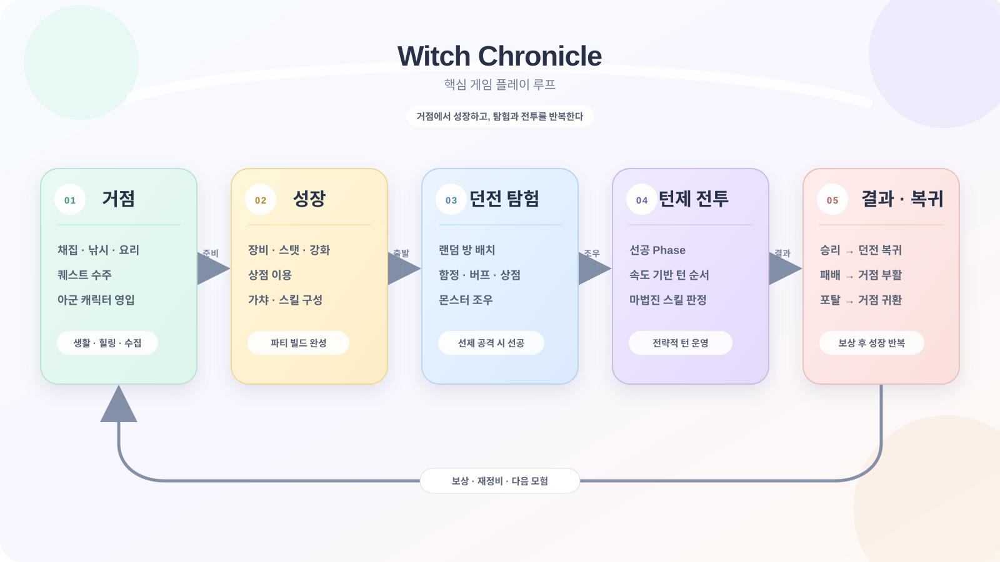
결과·복귀 단계에서 얻은 보상으로 캐릭터를 재정비한 뒤 다시 거점으로 돌아가 다음 모험을 준비하는 순환 구조로 설계했습니다.
- 방치형 채집, 낚시, 요리 등 생활 콘텐츠 진행
- NPC와 대화해 퀘스트 수주
- 퀘스트 진행을 통해 새로운 아군 캐릭터 영입
- 상점, 강화, 스킬 가챠 등 성장 기능 이용
- 원하는 던전을 선택해 탐험 시작
- 캐릭터별 장비와 스탯 확인
- 장비 강화와 캐릭터 능력치 성장
- 가챠로 스킬을 획득하고 캐릭터별 스킬 슬롯 구성
- 최대 4명의 캐릭터를 기준으로 파티 전투 준비
- 여러 타입의 방을 랜덤하게 배치하여 던전 생성
- 함정, 버프·디버프, 상점, 보물상자 이벤트 발생
- 몬스터와 조우한 뒤 공격하면 Battle Scene 진입
- 플레이어가 먼저 공격했을 경우 선공 Phase 획득
- 선공 조건이 충족되면 선공 Phase부터 진행
- 0 Phase부터 캐릭터와 몬스터의 속도 스탯을 비교해 턴 순서 결정
- 캐릭터에게 장착한 스킬을 사용해 전투 진행
- 일부 스킬은 마법진을 직접 그리고 판정 결과에 따라 데미지 배율 결정
- 승리: 기존 던전 상태를 유지한 채 탐험 화면으로 복귀
- 패배: 던전 탐험을 종료하고 거점에서 부활
- 귀환 포탈: 플레이어가 원하는 시점에 거점으로 복귀
- 획득한 보상을 바탕으로 캐릭터를 성장시킨 뒤 다음 탐험 진행

스킬 사용 시 정해진 마법진을 마우스로 직접 그리게 하고, 정답 궤적과의 유사도에 따라 데미지 배율이 달라지는 전투 미니게임을 구현했음.
정답 궤적과 플레이어가 그린 궤적을 같은 데이터 구조로 표현. 제작 도구와 런타임이 동일한 포맷을 공유하기 때문에 별도의 변환 단계 없이 같은 판정 함수에 전달할 수 있음. x/y는 그리기 영역 기준 0~1 정규화 좌표, strokeId는 몇 번째 획에 속하는지를 나타내며 여러 번 펜을 떼야 하는 복수 스트로크 패턴을 지원.
{
"skillName": "fire_triangle",
"strokeCount": 2,
"points": [
{ "x": 0.1234, "y": 0.8765, "strokeId": 0 },
{ "x": 0.2345, "y": 0.7654, "strokeId": 0 },
{ "x": 0.5000, "y": 0.5000, "strokeId": 1 }
]
}판정에 사용하는 좌표(화면 픽셀 → ScreenToAreaLocal → 0~1 정규화 좌표)와 화면에 선을 그리는 좌표(AreaLocalToViewport → Camera.ViewportToWorldPoint → World 좌표)를 분리. 그리기 UI의 크기나 위치가 변경되어도 판정 데이터는 항상 0~1 범위를 유지하므로, 해상도나 UI 배치가 달라져도 같은 정답 템플릿을 사용할 수 있음.
- 그리기 영역 내부에 첫 유효 지점이 기록될 때만 새 strokeId 생성
- 최소 점 간격 0.005를 적용해 과도한 샘플링 방지
- 마우스를 뗀 후 기본 0.45초 동안 추가 입력이 없으면 판정 시작
- 영역 밖에서 클릭했다 놓는 입력은 빈 스트로크로 처리하지 않음
같은 인덱스의 점을 단순 비교하면 그리는 속도와 시작점 차이에 민감해지는 문제를 완화하기 위해, 궤적을 점들의 집합으로 다루는 $P Point-Cloud 방식을 기반으로 구현.
- 리샘플링 — 경로 길이 기준 64개 점으로 통일, 서로 다른 strokeId 사이 구간은 거리 계산에서 제외
- 정규화 — 중심점을 빼 위치 차이 제거, 바운딩 박스 대각선 길이로 나눠 크기 차이 제거
- Greedy Cloud Matching — 각 점을 상대 궤적에서 아직 사용하지 않은 가장 가까운 점과 매칭, 여러 시작 인덱스 중 가장 작은 거리를 최종 거리로 선택
- 점수 계산 — 가중 평균 거리를 최대 허용 거리로 정규화한 값을 0~100점으로 변환
기본 임계값 70점을 데미지 1배의 기준으로 사용. 70점 미만은 최소 배율에서 1배 사이, 70점 이상은 1배에서 최대 배율 사이로 선형 보간.
private float ScoreToMultiplier(float score)
{
if (score < _scoreThreshold)
{
float t = Mathf.InverseLerp(0f, _scoreThreshold, score);
return Mathf.Lerp(_minDamageMultiplier, 1f, t);
}
float highT = Mathf.InverseLerp(_scoreThreshold, 100f, score);
return Mathf.Lerp(1f, _maxDamageMultiplier, highT);
}- 판정 결과 잠시 유지
- Header를 숨기고 타이머 색상을 결과 색으로 전환
- 그린 방향을 따라 Outline이 나타나는 색 와이프
- 라인 두께가 커졌다 돌아오는 펄스
- 라인의 알파와 두께를 줄이는 페이드아웃
- 최종 데미지 배율 카운트업
- 결과 유지 후 전체 UI 페이드아웃
DOTween과 코루틴을 조합해 각 연출 단계의 타이밍을 독립적으로 조절할 수 있도록 구성, 판정 결과를 전투 흐름 속에서 명확하게 전달할 수 있게 됨.
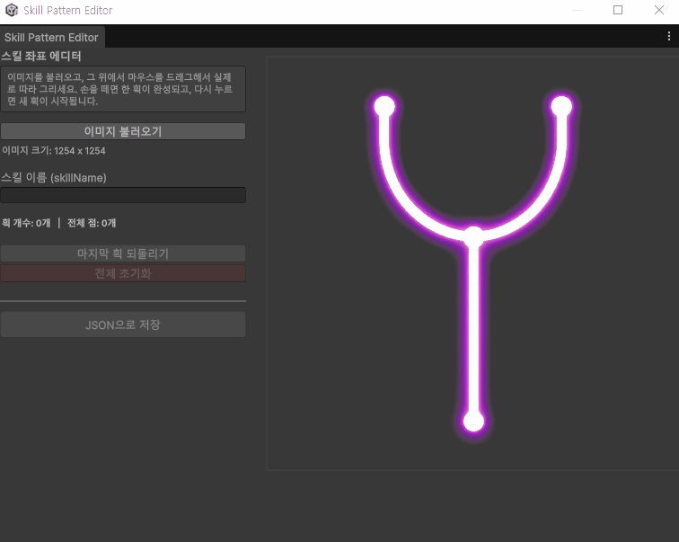
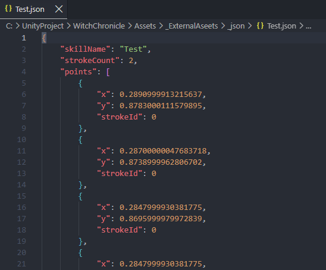
초기에는 웹 페이지에서 직접 궤적을 그리는 도구와 Python·OpenCV를 이용한 자동 윤곽선 추출 도구를 병행했으나, 결과물을 Unity로 옮기는 과정에서 문제가 있었음.
- 웹 또는 Python 환경에서 작업한 뒤 JSON을 프로젝트로 직접 이동해야 함
- 팀원이 Python과 OpenCV 환경을 별도로 설치해야 함
- 생성한 좌표가 실제 게임에서 어떻게 보이는지 즉시 확인하기 어려움
- JSON 좌표와 기준 이미지가 서로 다른 위치에서 관리될 가능성
입력 좌표는 저장 시점이 아니라 입력되는 순간부터 0~1로 정규화.
private Vector2 ScreenToNormalized(Vector2 screenPosition, Rect canvasRect)
{
return new Vector2(
Mathf.Clamp01(
(screenPosition.x - canvasRect.x) / canvasRect.width),
Mathf.Clamp01(
(screenPosition.y - canvasRect.y) / canvasRect.height));
}- Unity 내부에서 패턴 제작 작업을 완결
- Python·OpenCV 설치 없이 팀원이 같은 도구 사용 가능
- 정답 이미지와 좌표 파일의 연결 관계 보존
- 제작 도구와 런타임 판정 시스템의 데이터 계약 통일
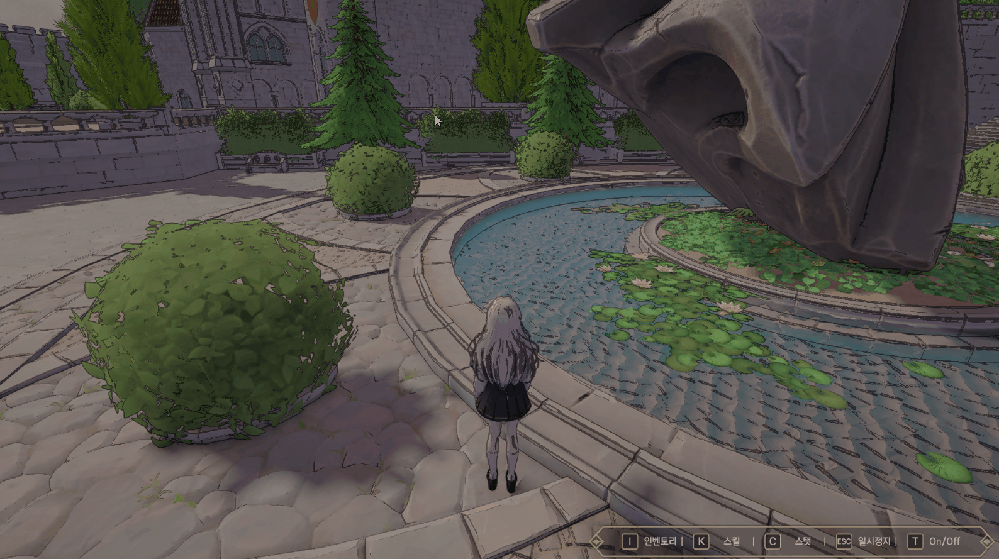
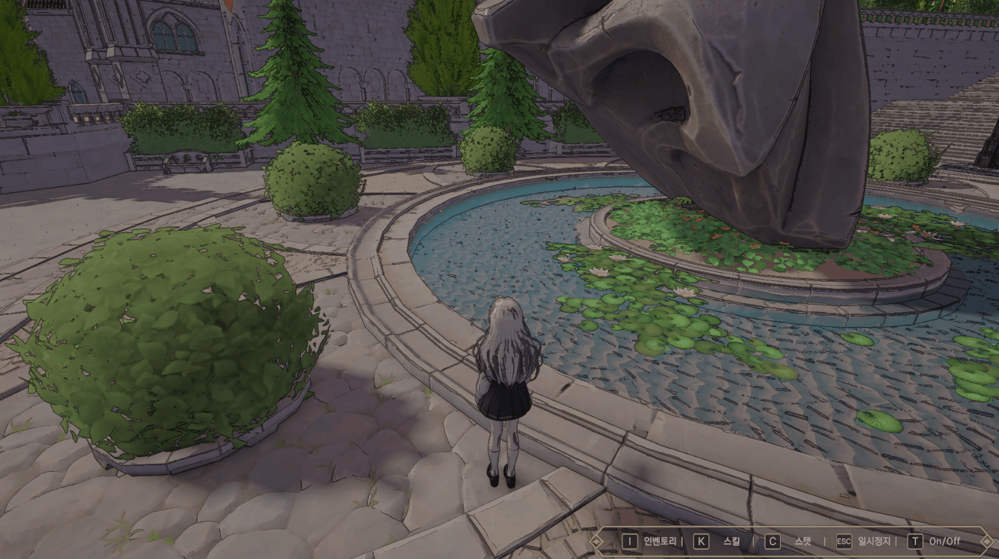
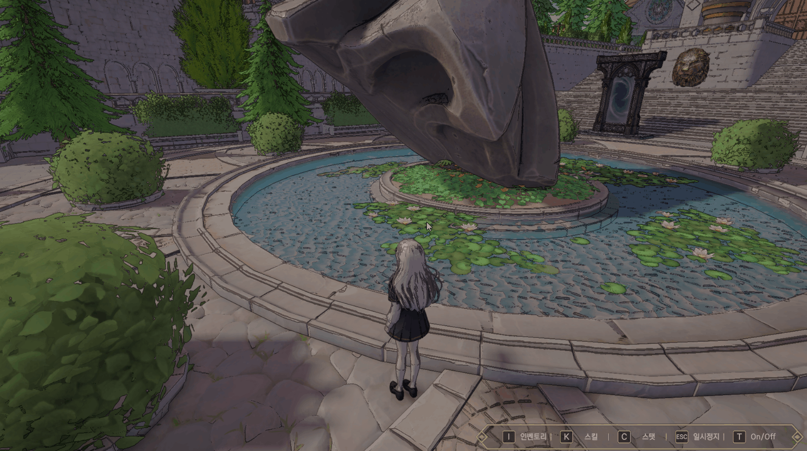
장비, 스탯, 스킬 장착 화면은 모두 현재 선택된 캐릭터를 기준으로 데이터를 표시해야 함. 선택 상태를 화면별로 관리하면 장비 화면에서 선택한 캐릭터와 스탯 화면에서 표시되는 캐릭터가 서로 달라질 수 있고, 같은 선택 상태를 사용하더라도 화면마다 요구하는 표현 방식(슬라이드·페이드 탭, 밑줄 이동 탭, 이전·현재·다음을 순환하는 캐러셀)은 서로 달랐음.
선택 상태를 CharacterSelectionManager에 중앙화하고, 실제 게임 데이터와 UI 표현을 분리. 매니저는 장비나 스탯 데이터를 직접 알지 않고, 각 화면이 선택 이벤트를 구독한 뒤 자신의 데이터 계층에 연결.
public sealed class CharacterSelectionManager : MonoBehaviour
{
private CharacterType _selected;
public event Action<CharacterType> OnSelectionChanged;
public CharacterType GetSelected()
{
return _selected;
}
public void SetSelected(CharacterType character)
{
if (_selected == character)
return;
_selected = character;
OnSelectionChanged?.Invoke(character);
}
public void ResetToDefault()
{
SetSelected(CharacterType.Default);
}
}- 최대 4개 고정 슬롯 중 현재 파티에 포함된 캐릭터만 활성화
- 최초 패널 진입 시 즉시 최종 상태를 표시하고 전환 애니메이션 생략
- 사용자가 선택을 변경한 이후부터 DOTween 애니메이션 재생
- 동일한 UI 이용 세션에서는 선택 상태 공유
- 전체 기능 종료 시 기본 캐릭터로 초기화해 예측 가능한 재진입 보장
- 선택 상태와 게임 데이터, UI 표현의 책임 분리
- 장비·스탯·스킬 장착 UI의 선택 상태 일관성 확보
- 새로운 선택 UI를 추가해도 매니저 변경 없이 확장 가능

- Main과 Dungeon 사이의 씬 로딩 중 화면이 멈추거나 끊겨 보임
- 로딩 직후 Awake와 Start 초기화가 끝나기 전에 빈 UI가 노출될 수 있음
- Battle Scene은 Dungeon과 캐릭터 오브젝트 구조가 달라 일반 전환과 다른 처리 필요
- 로딩 중 단축키 입력으로 아직 준비되지 않은 UI에 접근할 가능성
핵심은 로드 완료와 화면에 노출해도 되는 시점을 분리한 것.
private IEnumerator LoadSceneRoutine(SceneId sceneId)
{
yield return SceneManager.LoadSceneAsync(SceneId.Loading);
AsyncOperation operation =
SceneManager.LoadSceneAsync(sceneId.ToString());
operation.allowSceneActivation = false;
while (operation.progress < 0.9f)
{
_loadingUI.SetTargetProgress(operation.progress / 0.9f);
yield return null;
}
_loadingUI.SetTargetProgress(1f);
yield return new WaitUntil(() => _loadingUI.IsDisplayComplete);
yield return _transition.CoverIn();
_sceneReady = false;
operation.allowSceneActivation = true;
yield return new WaitUntil(() => operation.isDone);
yield return WaitForSceneReadyOrTimeout();
yield return _transition.RevealOut();
}- Title → Main: Loading Scene을 거치는 Single Load
- Main → Dungeon: Loading Scene을 거치는 Single Load
- Dungeon → Main: Loading Scene을 거치는 Single Load
- Dungeon → Battle: Dungeon을 유지한 상태에서 Battle을 Additive Load
- Battle 승리: Battle만 Unload하고 기존 Dungeon으로 복귀
- Battle 패배: Dungeon을 종료하고 Main으로 전환
승리 시 Dungeon을 다시 로드하지 않기 때문에 탐험 상태를 유지하고 불필요한 재생성 비용을 피할 수 있음.
상점, 인벤토리, 장비, 스탯, 강화와 같이 게임 화면 위에
열리는 UI가 서로 다른 배경 처리를 구현하지 않도록,
기능 UI가 열릴 때 현재 게임 화면을 스냅샷으로 저장하고
Blur를 적용하는 공통 흐름으로 관리. 씬 어디서든
UIBackgroundBlurManager.Instance?.Show()/Hide() 두 호출만으로 켜고 끌 수 있는
단일 매니저(DontDestroyOnLoad)로 구현.
여러 UI가 동시에 Blur를 요청할 수 있기 때문에, 단순
On/Off 플래그 대신 요청
횟수(_requestCount)로 상태를 관리. 이미
Blur가 켜져 있으면 다시 캡처하지 않고 요청 횟수만
증가시키고, 모든 요청이 해제되어 카운트가 0이 될 때만
실제로 Blur를 끄고 숨겼던 UI를 되돌림.
public void Show()
{
Camera sourceCamera = FindSourceCamera();
if (sourceCamera == null) return;
_requestCount++;
// 이미 Blur가 켜져 있다면 다시 캡처하지 않습니다.
if (_isVisible) return;
CaptureAndBlur(sourceCamera);
SetBlurVisible(true);
}
public void Hide()
{
if (_requestCount <= 0)
{
_requestCount = 0;
return;
}
_requestCount--;
if (_requestCount > 0) return;
SetBlurVisible(false);
}
씬 전환처럼 요청 횟수와 무관하게 즉시 꺼야 하는 경우를
위해 ForceHide()를 별도로 제공하고,
카메라 화면이 바뀐 상태에서 다시 캡처만 갱신하고 싶을
때는 Refresh()를 사용.
현재 화면을 표시 중인 카메라를 그대로 쓰지 않고,
비활성 상태로 대기하는 전용 캡처 카메라에 설정과
Transform을 복사한 뒤 targetTexture를
지정해 Render()를 한 번 직접 호출. 이렇게
캡처한 원본을 Horizontal → Vertical 두 Pass로 구성된
Blur Material에 반복 적용.
private void CaptureAndBlur(Camera sourceCamera)
{
CreateRenderTexturesIfNeeded();
CopyCameraSettings(sourceCamera);
_captureCamera.targetTexture = _captureTexture;
_captureCamera.Render();
_captureCamera.targetTexture = null;
Graphics.Blit(_captureTexture, _blurTextureA);
for (int i = 0; i < _iterations; i++)
{
float currentRadius = _blurRadius + i * 0.5f;
_blurMaterial.SetFloat(BlurRadiusId, currentRadius);
// Pass 0: Horizontal Blur
Graphics.Blit(_blurTextureA, _blurTextureB, _blurMaterial, 0);
// Pass 1: Vertical Blur
Graphics.Blit(_blurTextureB, _blurTextureA, _blurMaterial, 1);
}
_blurredBackground.texture = _blurTextureA;
}- Downsample 값으로 화면 해상도를 나눠 Blur용 RenderTexture 크기를 축소해 처리 비용 절감
- 화면 크기가 이전과 같으면 CreateRenderTexturesIfNeeded()에서 기존 RenderTexture를 그대로 재사용
- Blur 처리용 Texture는 depthBufferBits를 0으로 설정해 불필요한 Depth Buffer 생성 방지
- OnDestroy 시 ReleaseRenderTextures()로 생성한 RenderTexture를 모두 해제
기능별 UI의 배경 처리 일관성을 유지하고, 플레이어의 시선을 현재 조작해야 하는 정보에 집중시킴.
플레이어가 던전의 새로운 방 경계에 진입할 때마다 프레임이 크게 떨어지고 화면이 순간적으로 끊김.
| 측정 항목 | 개선 전 |
|---|---|
| RoomController.OnTriggerEnter | 257.90ms |
| 전체 프레임 CPU | 273.60ms |
| GC Allocated | 46.6MB |
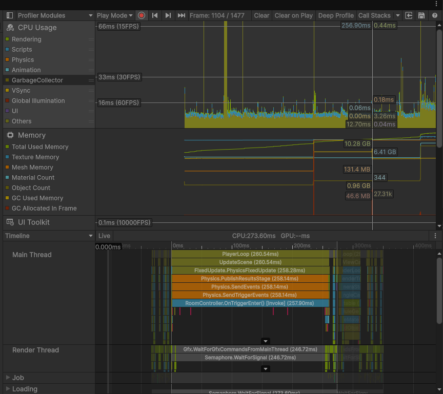
새로운 방을 발견할 때마다 던전의 바닥, 벽, 아이콘을 포함한 미니맵 텍스처 전체를 처음부터 다시 생성. 또한 SetPixel과 GetPixel을 픽셀 하나마다 호출하고 있어, 실제 픽셀 연산량뿐 아니라 수천~수만 번의 API 호출 오버헤드가 누적됨.
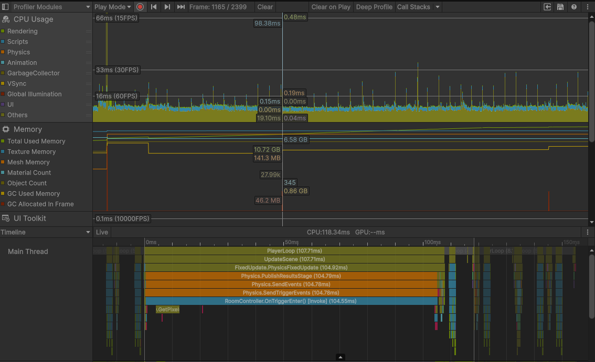
던전 생성 이후 변하지 않는 바닥과 벽은 최초 한 번만 생성. 이후 방을 발견할 때는 캐싱한 베이스를 재사용하고 아이콘만 다시 그려, OnTriggerEnter 처리 시간이 257.90ms에서 104.55ms로 감소.
픽셀마다 SetPixel을 호출하는 대신 전체 배열을 가져와 인덱스로 수정한 뒤 한 번에 반영하고, 아이콘 텍스처의 픽셀 배열도 캐싱.
// Before
for (int x = 0; x < pixelsPerTile; x++)
{
for (int y = 0; y < pixelsPerTile; y++)
{
texture.SetPixel(startX + x, startY + y, color);
}
}
// After
Color[] pixels = texture.GetPixels();
for (int x = 0; x < pixelsPerTile; x++)
{
for (int y = 0; y < pixelsPerTile; y++)
{
int index = (startY + y) * textureWidth + startX + x;
pixels[index] = color;
}
}
texture.SetPixels(pixels);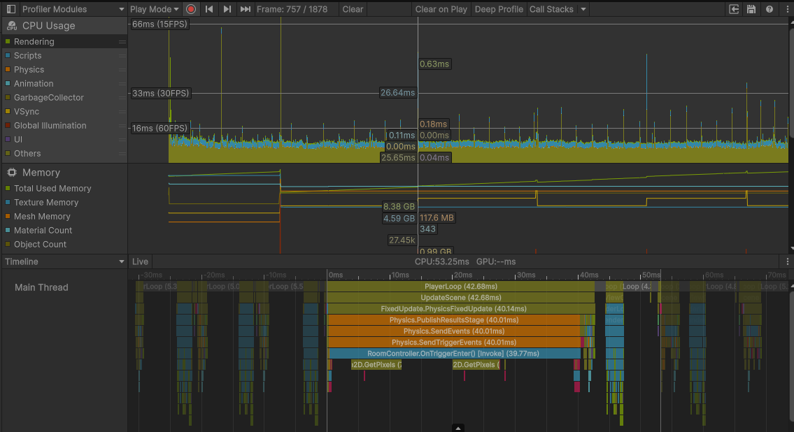
방 진입 처리는 39.77ms, 전체 프레임 CPU는 53.25ms까지 감소했지만, GetPixels()가 매번 새로운 배열을 반환하면서 GC Allocated가 90.1MB로 증가하는 새로운 문제가 발견됨.
Refresh마다 발생하던 중복 GetPixels() 호출을 제거하고, 최초 렌더링 시 베이스 픽셀을 저장한 뒤 갱신 시에는 복제본만 사용.
| 단계 | OnTriggerEnter | 프레임 CPU | GC Allocated |
|---|---|---|---|
| 개선 전 | 257.90ms | 273.60ms | 46.6MB |
| 베이스 캐싱 | 104.55ms | 118.34ms | - |
| 배열 처리·아이콘 캐싱 | 39.77ms | 53.25ms | 90.1MB |
| 중복 GetPixels 제거 | - | 40ms대 | 감소 |
최초 대비 CPU 처리 시간을 약 6배 이상 단축하고 방 진입 시 체감 끊김을 제거. CPU 최적화 과정에서 증가한 GC 할당을 다시 추적하고 추가 개선하며, 단일 수치만 보는 대신 CPU와 GC를 함께 확인하는 Profiler 기반 개선 경험을 얻음.
인벤토리, 상점, 스킬 장착 화면은 카테고리와 필터가 변경될 때마다 목록 전체를 갱신해야 함. 초기 구현에서는 갱신할 때 기존 슬롯을 모두 제거하고 데이터 개수만큼 다시 생성했는데, 카테고리 전환마다 Instantiate/Destroy가 반복되며 Awake와 컴포넌트 초기화, UI Rebuild 비용이 발생하고 파괴된 오브젝트가 가비지로 누적되어 GC 스파이크와 프레임 드랍으로 이어짐.
private void RefreshList(IReadOnlyList<ItemData> items)
{
foreach (Transform child in _content)
{
Destroy(child.gameObject);
}
foreach (ItemData item in items)
{
ItemSlot slot = Instantiate(_slotPrefab, _content);
slot.Bind(item);
}
}1차로 UnityEngine.Pool.ObjectPool<T>를 적용해 슬롯을 제거하지 않고 재사용하도록 개선했지만, 생성·파괴 비용과 GC 부담만 줄었을 뿐 데이터 전체만큼 활성 오브젝트가 존재하는 문제는 해결되지 않음. 데이터 300개 중 화면에 보이는 셀은 5~6개뿐인 상황에서도 실제 활성 슬롯은 300개였고, 화면 밖 슬롯도 Layout과 Canvas Rebuild 계산에 포함되어 목록 규모가 커질수록 비용이 증가.
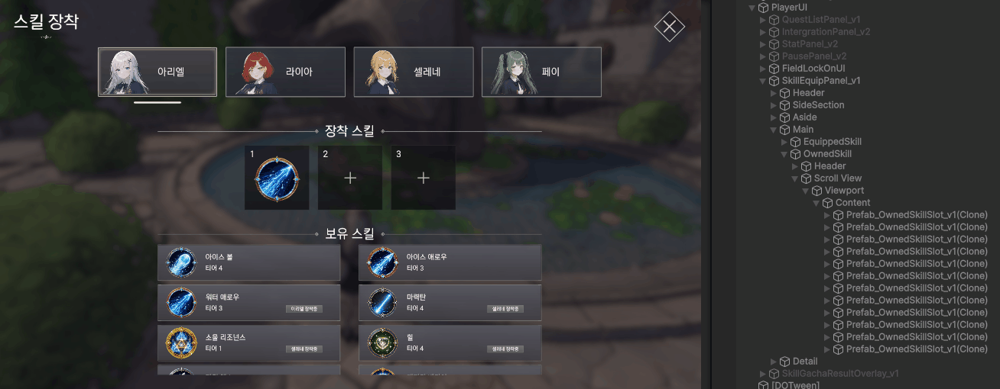
최적화 목표를 생성 비용에서 활성 오브젝트 수 제한으로 바꿔, 뷰포트에 실제로 보이는 셀과 여유 버퍼만 생성하고 스크롤 위치에 따라 셀의 위치와 데이터만 교체하는 Recycled Scroll View(Pooling + Infinite Scroll)를 구현. Content는 가상 크기만 유지하고, 재사용되는 셀에 선택 상태를 저장하면 스크롤 후 다른 데이터를 표시할 때 잘못된 선택 표시가 남을 수 있어 선택 상태는 셀이 아닌 실제 데이터로 추적.
int visibleRows = Mathf.CeilToInt(viewportHeight / rowStride) + 1;
int neededRows = visibleRows + _bufferRows;
int poolSize = neededRows * _columnCount;
private void HandleScroll(Vector2 normalizedPosition)
{
float scrolledY = _content.anchoredPosition.y;
int firstRow = Mathf.FloorToInt(
(scrolledY - _padding.top) / _rowStride);
int firstIndex = Mathf.Max(0, firstRow * _columnCount);
if (firstIndex == _firstVisibleIndex)
return;
_firstVisibleIndex = firstIndex;
for (int slotIndex = 0; slotIndex < _pool.Count; slotIndex++)
{
int dataIndex = firstIndex + slotIndex;
RebindCell(slotIndex, dataIndex);
}
}| 구분 | Instantiate / Destroy | Object Pooling | Pooling + Infinite Scroll |
|---|---|---|---|
| 생성·파괴 비용 | 갱신마다 발생 | 최초 생성 이후 제거 | 최초 생성 이후 제거 |
| 활성 슬롯 수 | 전체 데이터 수 | 전체 데이터 수 | 뷰포트 + 버퍼 수 |
| GC 부담 | 높음 | 감소 | 감소 |
| 대규모 데이터 확장성 | 낮음 | 제한적 | 높음 |
| 공통화 | 화면별 구현 | 화면별 Pool | 제네릭 공통 구조 |
Object Pooling을 최종 해결책으로 보지 않고 남아 있는 병목을 다시 분석해 Pooling + Infinite Scroll로 확장. 데이터가 300개 또는 3,000개로 증가해도 실제 활성 UI 오브젝트 수는 뷰포트에 필요한 범위로 제한되어, 오브젝트 생성 비용을 줄이는 수준을 넘어 데이터 규모에 따른 UI 연산 비용 증가 자체를 억제.
오브젝트마다 메시를 확장해 외곽선을 그리는 대신, 카메라의 Depth·Normal 텍스처에서 불연속 경계를 검출하는 풀스크린 Outline 방식을 채택. 오브젝트 수마다 Outline 패스를 추가하지 않고 화면 전체를 한 번에 처리할 수 있었지만, Depth-Normals 기반 Outline이 카메라 화면 전체를 처리하면서 NPC World Space Canvas와 Screen Space-Camera UI에도 외곽선이 함께 적용됨. UI 주변에 불필요한 선이 생겨 판타지 스타일의 시각적 일관성과 정보 가독성이 저하됨.
풀스크린 Outline 방식이 3D 오브젝트와 UI를 구분하지 않고 화면 전체를 대상으로 동작하는 구조였기 때문에, World Space Canvas와 Screen Space-Camera UI도 예외 없이 Depth·Normal 경계 검출 대상에 포함됨.
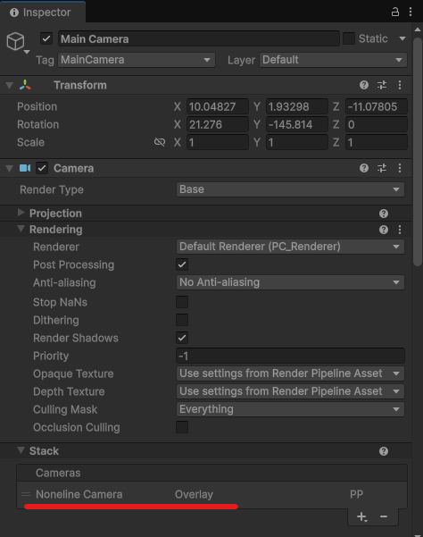
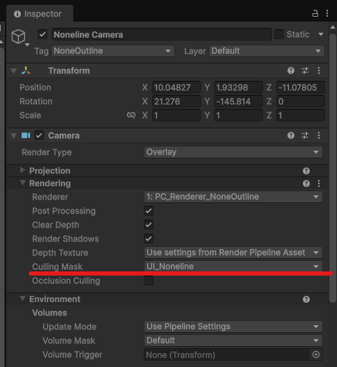
- Outline을 처리하는 Main Camera(Base)와 UI를 처리하는 Overlay Camera로 분리 — Main Camera는 Character/Monster/Field 레이어를 렌더링하며 Outline Renderer Feature로 Depth-Normals Outline 처리
- Overlay Camera는 World Space UI/Camera Space UI 레이어만 렌더링하는, Outline이 없는 Renderer를 사용해 Main Camera Stack 위에 합성
- Main Camera의 Culling Mask에서 UI 레이어를 제외하고, Overlay Camera는 UI 레이어만 렌더링해 1차로 레이어 분리
- Outline Renderer Feature의 Obstacle Mask로 적용 대상을 2차로 한 번 더 제한
- Camera Stack으로 최종 화면 합성
- 개별 UI마다 셰이더 예외 처리를 추가하지 않고 문제 해결
- UI Outline 오염 차단
- NPC 상호작용 UI와 록온 표시의 Outline 오염 제거
- 렌더링 파이프라인 단계에서 3D 오브젝트와 UI 분리
- 레이어 설정만으로 신규 UI를 동일한 구조에 편입
배열 일괄 처리로 CPU 시간을 크게 줄였지만 GetPixels()가 만드는 배열 때문에 GC Allocated가 오히려 증가했음. 하나의 지표가 좋아졌다고 끝난 것이 아니라 변경 후 CPU·GC· 프레임 시간을 다시 확인해야 한다는 점, 그리고 Object Pooling만으로 부족했던 리스트 렌더링을 Infinite Scroll까지 확장하며 문제의 범위를 단계적으로 좁혀가는 경험을 얻음.
캐릭터 선택 상태를 단일 매니저로 분리한 결과, 장비·스탯·스킬 화면이 동일한 선택 상태를 공유할 수 있었고 탭·선택선·캐러셀처럼 표현 방식이 달라도 상태 관리 코드를 수정할 필요가 없었음.
마법진 제작 도구와 런타임 판정 시스템이 x·y·strokeId라는 동일한 데이터 포맷을 공유하도록 설계해, 도구에서 생성한 JSON을 별도 변환 없이 게임에서 사용할 수 있었음.
비동기 로드의 진행률만으로 전환을 끝내면 대상 씬의 초기화 상태까지 보장할 수 없음. SceneReadySignal을 도입하며 엔진의 로드 상태와 실제 플레이 준비 상태를 별도의 개념으로 다뤄야 한다는 점을 배움.
Outline 문제를 UI마다 예외 처리하지 않고 카메라와 Renderer를 분리해 해결. 화면 전체를 처리하는 효과는 개별 오브젝트를 조건문으로 제외하는 것보다, 효과가 보는 렌더링 범위를 구조적으로 제한하는 방식이 유지보수에 유리했음.
미니맵은 Profiler 수치를 단계별로 기록했지만 Recycled Scroll View는 구조적 개선에 비해 정량적 비교가 부족함. 데이터 100/300/1,000개 기준 프레임 CPU, 활성 GameObject 수, Canvas Rebuild 시간, 카테고리 전환 시 GC Allocated, 최초 Pool 구성 비용을 같은 조건에서 측정하고 싶음.
현재는 세로 방향 N열 목록 기준. 가변 높이 셀, 수평 스크롤, 셀 크기가 다른 목록, 섹션 Header와 그룹 목록, 비동기 이미지 로딩과 취소 처리, 빠른 스크롤 시 프리패치 범위 동적 조절을 공통 컴포넌트에 추가하고 싶음.
현재 파티에 포함된 슬롯만 활성화하는 코드가 캐릭터 선택 UI 여러 곳에서 유사하게 반복됨. 공통 헬퍼 또는 베이스 컴포넌트로 분리하면 중복을 줄이고 파티 구성 정책 변경 시 수정 지점을 단일화할 수 있음.
패턴별 정상 입력, 회전 입력, 크기 차이, 역방향 입력, 불완전한 입력 데이터를 준비하고 자동 테스트를 구성하고 싶음. 패턴별 기대 점수 범위, 입력 샘플 수 변화에 대한 안정성, 임계값·데미지 배율 밸런스, 멀티 스트로크 순서 변경, 잘못된 JSON·빈 입력 예외 처리를 테스트해 판정 파라미터 추가 시 기존 스킬의 회귀 문제를 방지하고 싶음.
현재는 일정 프레임을 기다린 뒤 준비 신호를 보내는 방식. 프로젝트 규모가 커지면 Player 준비, Camera 준비, Core UI 준비, Dungeon Data 준비 등 실제 준비 작업을 비동기 Task 또는 등록형 Ready Handle로 명시적으로 수집해, 어떤 시스템 때문에 전환이 지연되는지 추적하기 쉬운 구조로 개선하고 싶음.
Camera Stack으로 UI Outline 문제를 구조적으로 해결했지만 Overlay Camera가 추가 렌더링 패스를 발생시키는 만큼, 저사양 환경에서 Main Camera 단독 대비 Camera Stack의 GPU 비용, 해상도별 풀스크린 Outline 비용, World Space UI 개수 증가에 따른 Overdraw, 모바일 환경에서의 Depth·Normal Texture 비용을 검증하고 싶음.
Witch Chronicle에서는 UI·UX 구현에 머무르지 않고, 상태 관리, 데이터 파이프라인, 제작 도구, 씬 전환, 렌더링 구조와 성능 최적화까지 게임 클라이언트 전반을 담당했습니다.
- 제작 도구부터 런타임 판정까지 연결된 마법진 입력 시스템 구축
- 최대 4인 캐릭터의 선택 상태와 UI 표현을 분리한 확장형 UI 구조 설계
- Instantiate·Destroy에서 Object Pooling, Infinite Scroll까지 단계적으로 개선한 리스트 렌더링
- Profiler를 기반으로 미니맵 CPU 시간을 약 6배 이상 단축
- 로드 완료와 노출 가능 시점을 분리한 안정적인 씬 전환
- Camera Stack으로 Toon Outline과 UI 렌더링 영역을 구조적으로 분리